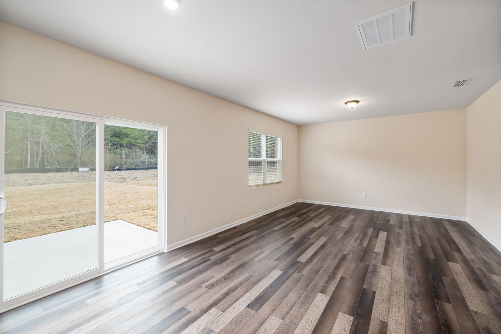
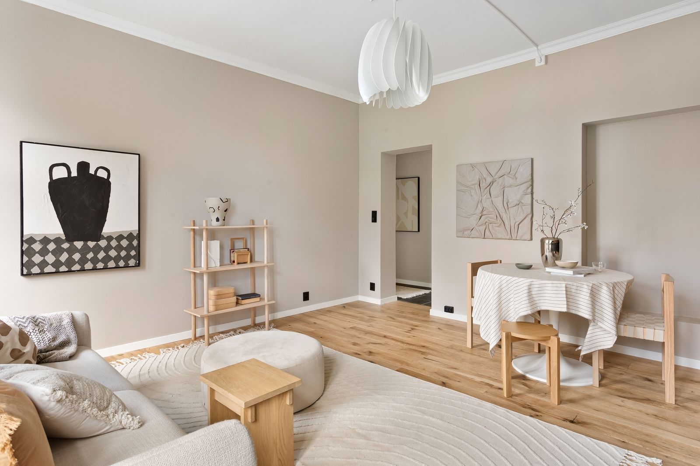

Entretien
Préserver une finition, choisir les bons produits, éviter les gestes qui abîment.
Conseils
Un média technique consacré au parquet : diagnostic, entretien, rénovation, pose, humidité, défauts et choix du revêtement. Des contenus écrits pour être utiles, pas pour vendre.
Préserver une finition, choisir les bons produits, éviter les gestes qui abîment.

Ce qui se rénove, ce qui se remplace, et comment décider entre les deux.
Support, acclimatation, jeux périphériques : les conditions qui font tenir un parquet.

Massif, contrecollé, stratifié : ce qui distingue réellement ces familles.
Derniers articles

Des joints qui s’ouvrent en hiver et se referment au printemps sont normaux. Trois situations, en revanche, méritent d’être regardées de près.
Normal sur une pose flottante, préoccupant sur une pose collée. La première question n’est pas pourquoi ça sonne creux, mais comment le parquet est posé.

Réaction chimique, moisissure ou finition épuisée : trois phénomènes différents, trois réponses différentes. La forme et l’odeur suffisent souvent à trancher.
Tous les articles
Le même fonds, rangé par question posée plutôt que par date de publication.
Par symptôme
Les pages « problèmes » traitent chaque symptôme séparément.
Décrivez votre situation en quelques minutes. Vous recevrez les éléments à vérifier en priorité et, si elle se justifie, une proposition d’expertise.